返回
Wiki
风琴室 Organ_Room
B百合
B贝壳
D刀
D弹壳
D打火机
D笛子
D蛋
G弓
G狗
G高脚杯
G鼓
H怀表
H黄钻
J剑
J剪刀
J戒指
J金属手套
J镜子
K阔剑
L绿钻
L老鼠
L辣椒
L铃鼓
M墨水瓶
M猫头鹰
M蘑菇
P瓶子
P苹果
Q巧克力
R人形雕像
S哨子
S圣甲虫
S手镯
S水壶
S沙漏
S砂槌
W乌龟
X熏香炉
Y圆形吊坠
Y摇铃
Y月亮
Y烟斗
Y烟斗
Y眼镜
Y羊驼雕像
Y羽毛
Y钥匙
Y音符
Y鱼
Z折叠式剃刀
Z纸牌
Z蜘蛛
P苹果 Apple
Y摇铃 Bell
P瓶子 Bottle
G弓 Bow
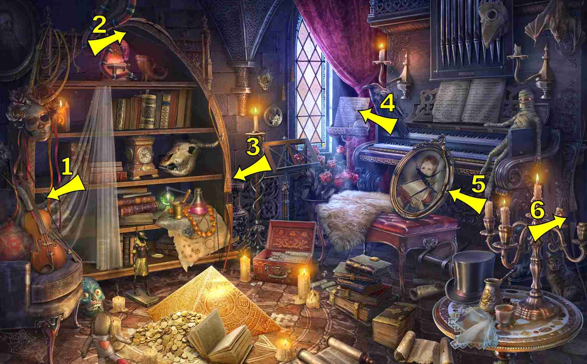
S手镯 Bracelet
K阔剑 Broadsword
X熏香炉 Censer
L辣椒 Chili Pepper
Q巧克力 Chocolate
G狗 Dog
G鼓 Drum
D蛋 Egg
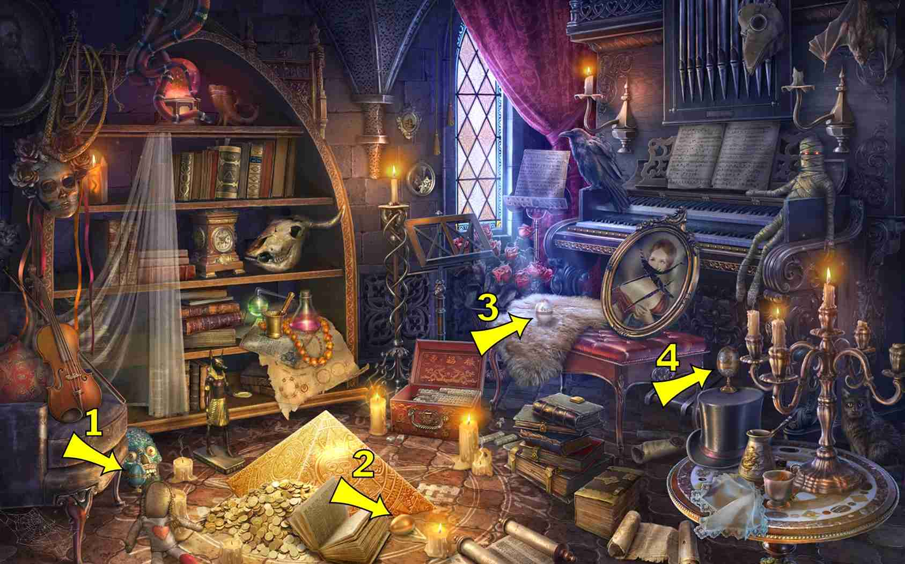
Y眼镜 Eyeglasses
Y羽毛 Feather
Y鱼 Fish
J金属手套 Gauntlet
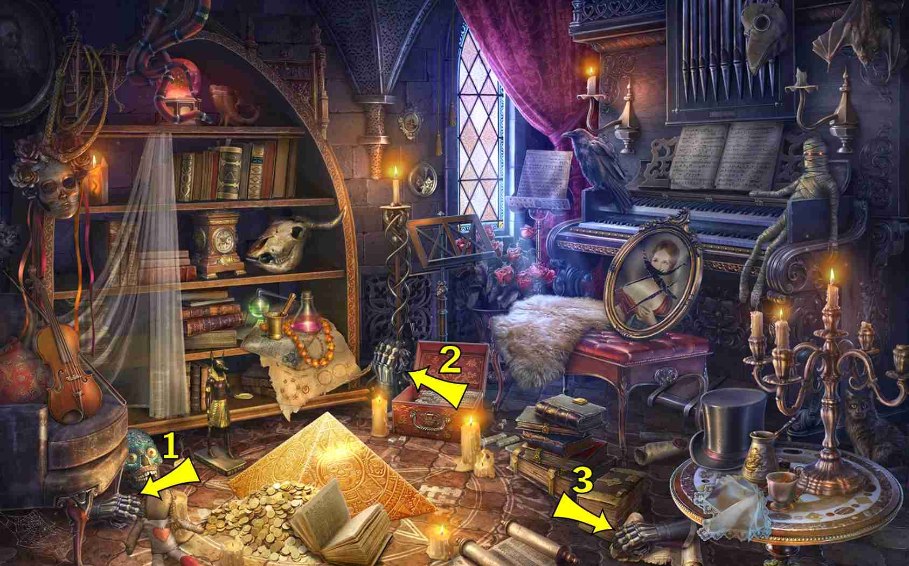
G高脚杯 Goblet
L绿钻 Green Diamond
S沙漏 Hourglass
M墨水瓶 Inkwell
Y钥匙 Key
D刀 Knife
D打火机 Lighter
B百合 Lily
Y羊驼雕像 Llama Figurine
R人形雕像 Man Figurine
S砂槌 Maracas
Y圆形吊坠 Medallion
J镜子 Mirror
Y月亮 Moon
L老鼠 Mouse
M蘑菇 Mushrooms
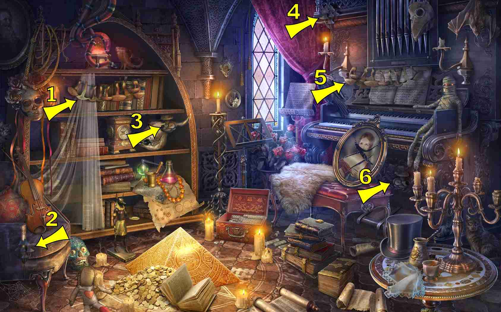
Y音符 Music Note
D笛子 Musical Pipe
M猫头鹰 Owl
Y烟斗 Pipe
S水壶 Pitcher
Z纸牌 Playing Card
H怀表 Pocket Watch
J戒指 Ring
S圣甲虫 Scarab
J剪刀 Scissors
B贝壳 Shell
D弹壳 Shotgun Shell
Y烟斗 Smoking Pipe, see "Pipe"
Z蜘蛛 Spider
Z折叠式剃刀 Straight Razor
J剑 Sword, See Broadsword
L铃鼓 Tambourine
1 items:
On top of hat (bottom right corner on table)
W乌龟 Turtle
S哨子 Whistle
H黄钻 Yellow Diamond
 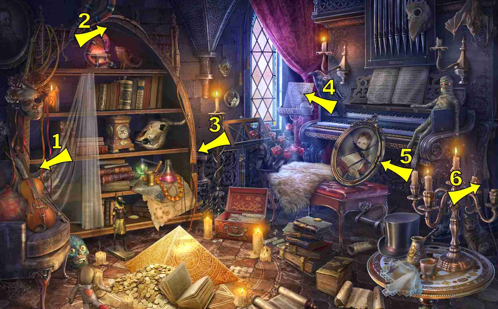
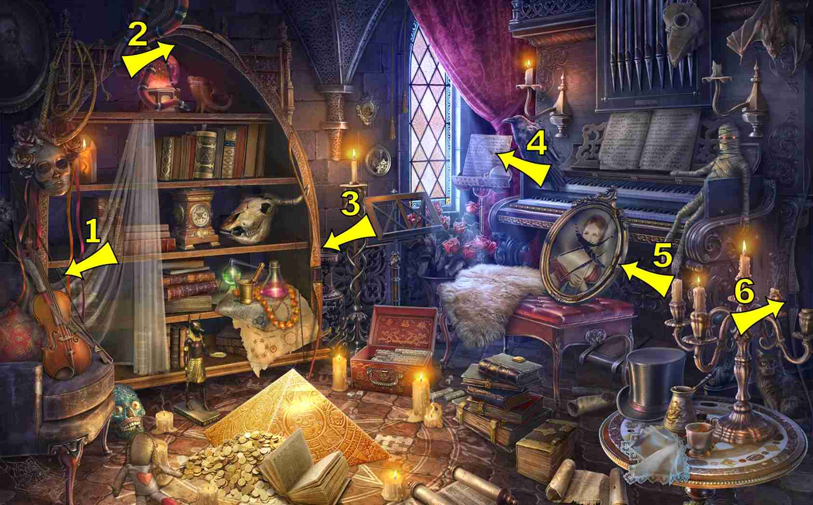

 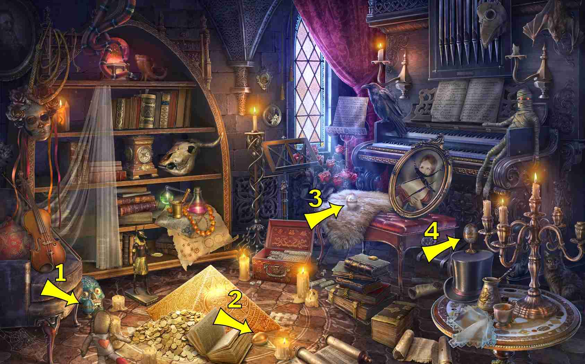
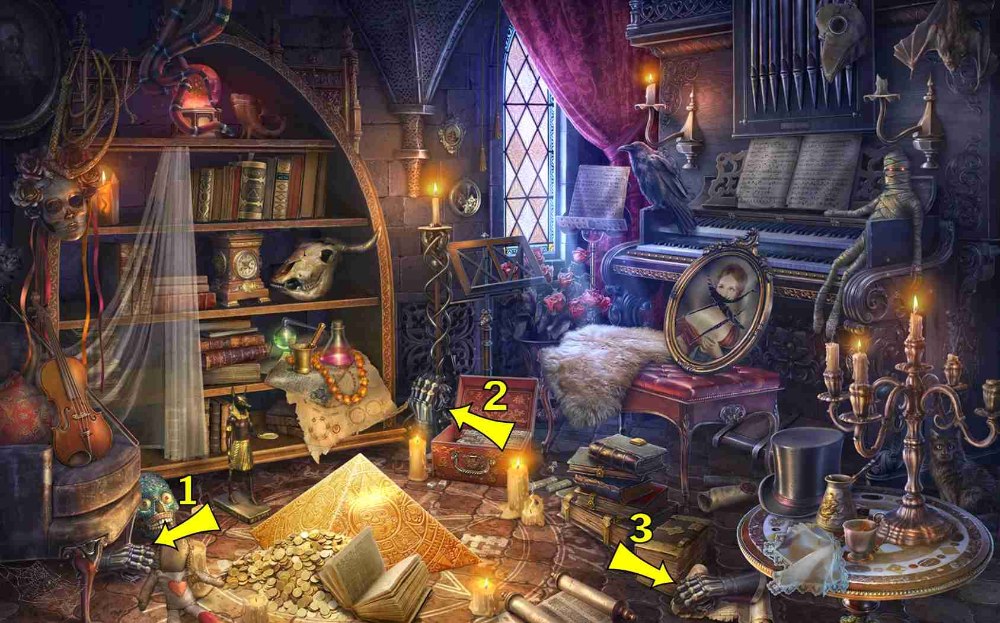
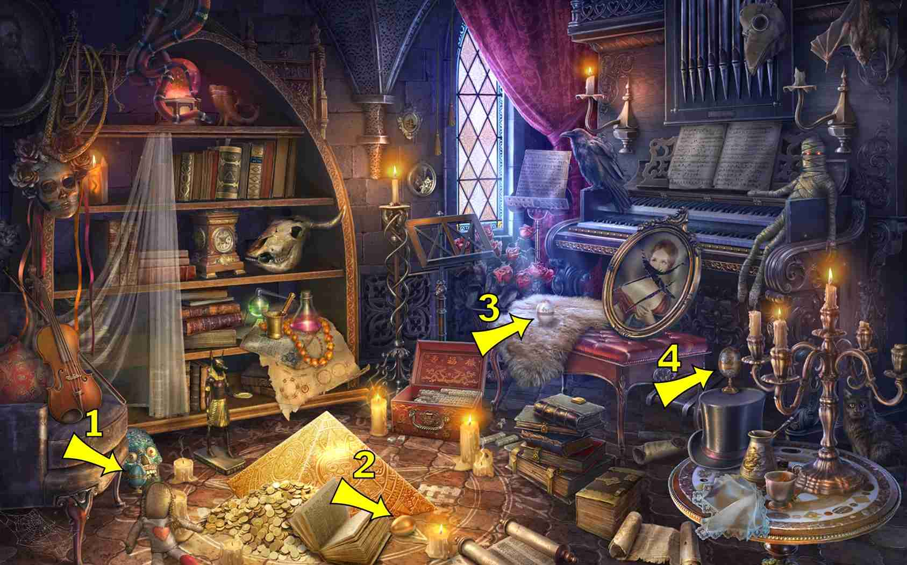
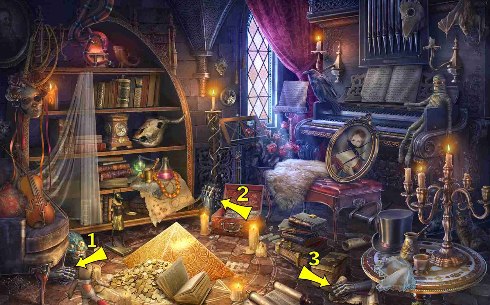

 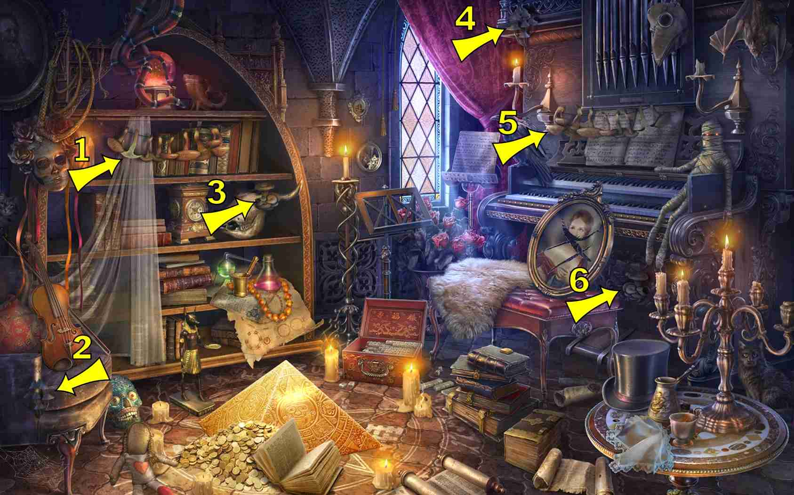
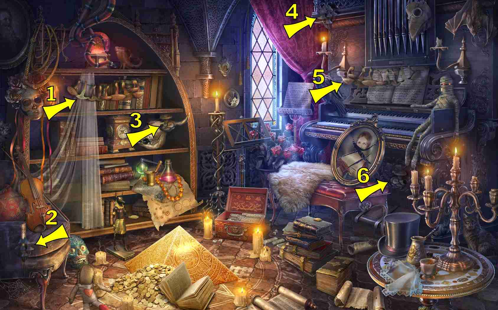